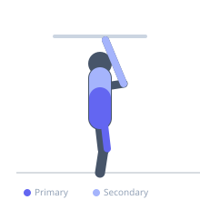
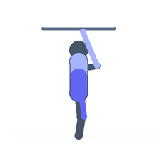

Exercise guide / Toes to Bar
Toes to Bar
Toes to bar is a hanging core exercise performed from a pull-up bar in which the athlete raises both legs simultaneously until the toes make contact with the bar. The movement demands strong hip flexor force production, full rectus abdominis tension to posteriorly tilt the pelvis, and sufficient lat engagement to stabilize the shoulder girdle against the upward leg drive. It is a staple exercise in CrossFit and gymnastics conditioning programs.
Primary muscles
rectus abdominis
iliacus
psoas major
Secondary muscles
latissimus dorsi
flexor carpi radialis
rectus femoris
Stabilizers
trapezius upper
internal oblique
Equipment
Pull-Up Bar (Doorframe)
Optional
Pull-Up Bar (Freestanding Tower)
Pull-Up Bar (Wall-Mounted)


Starting position
- Hang from a pull-up bar with an overhand grip at shoulder-width or slightly wider. Arms fully extended, body in a controlled dead hang.
Setup
- Use a secure pull-up bar. Chalk improves grip. Begin with hanging knee raises if unable to perform the full movement.
Steps
- Step 1: Begin in a dead hang with arms fully extended.
- Step 2: Engage the lats to stabilize the shoulder position.
- Step 3: Drive both legs upward simultaneously, initiating with the hip flexors and reinforcing with abdominal compression.
- Step 4: At the top of the movement, the toes should contact the bar between the hands.
- Step 5: Lower the legs with control back to the starting dead hang position.
Coaching cues
- Squeeze the bar hard and pull lats down
- Curl the tailbone up — not just the legs
- Toes reach for the bar — do not let the bar come down to your toes
Breathing
- Exhale forcefully as the legs rise. Inhale on the descent.
Range of motion
- Full range requires the toes to touch the bar. Partial range (legs to 90 degrees) is an acceptable progression.
Tempo
- 1–2 second concentric, 2 second eccentric. Avoid uncontrolled bouncing at the bottom.
Common mistakes
- Using excessive kipping (swinging momentum) which reduces core demand
- Bending the knees to reach the bar instead of using straight-leg form
- Failing to engage the lats — the shoulders should not shrug to the ears
Safety
- Grip failure can cause falls — use chalk and ensure the bar is secure.
- Build from hanging knee raises and hanging leg raises progressively.
Training
- strength: 5–12 reps
- endurance: 15–25 reps
- strength: 3–4 sets
- endurance: 3–5 sets
- Rest: {'strength': 120, 'endurance': 60}